| Сплошные окрасы | Черепаховые окрасы | Дымчатая сибирская кошка | Вернуться на основной сайт |
|---|---|---|---|
| Колор-пойнт или гималайский окрас | Биколор | Тэбби | Сибирская короткошерстная |
Кошка, принадлежащая к данной группе, должна иметь однотонный окрас, без каких-либо признаков пятен или рисунка. Такой окрас называется Solid и предполагает волоски, окрашенные от корней до самых кончиков в равномерный цвет. Это может быть белая, черная или голубая сибирская кошка, но никак не трехцветная или маскарадная.
В этой группе характерно преобладание глаз оранжевого или медного цвета, хотя у белых особей глаза вполне могут быть голубыми. В отдельных случаях они даже могут быть разных цветов, например, один глаз голубого цвета, второй — рыжий.
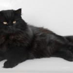 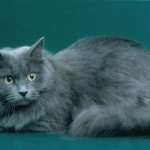 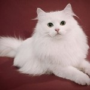 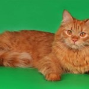Представляют собой определенное, как правило, мозаичное, сочетание пятен, образованных цветом интенсивного оттенка в сочетании с красным либо разбавленным оттенком в сочетании с кремовым. Сибирский кот или кошка, имеющие черепаховый окрас, обязательно должны быть окрашены в цвета, гармонично сочетающиеся и представленные в равных пропорциях, а участки красного (кремового) оттенка не должны иметь элементов рисунка. Сибирская кошка, имеющая подобный окрас, обладает глазами оранжевого или медного оттенка. Интересно, что кот только в редких случаях может иметь черепаховый окрас, и для этого он должен быть стерильным.
Объясняется это тем, что домашняя кошка имеет две Х-хромосомы, следовательно, определяющие окрас гены представлены в двух видах. Благодаря этому становится возможным наличие двух разных генов, один из которых отвечает за красный окрас, другой — за черный. Их сочетание образует окрас черепахового цвета. Поскольку отвечающий за это ген находится в X-хромосоме (имеющейся только у кошек) и отсутствует в Y-хромосоме, сибирский кот лишен такой возможности.
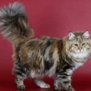 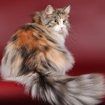 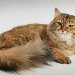 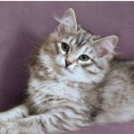Эта группа отнесена к серебристым окрасам, связанных генетически с действием меланина I. Этот ген-ингибитор останавливает синтез меланина, поэтому остевой волос прокрашивается исключительно в верхней части, а белая область шерстинок и подшерсток создают красивый дымчатый цвет. Эта группа имеет две подгруппы — шиншилла и собственно дымчатый окрас.
Дымчатая сибирская кошка отличается рядом особенностей. Корни ее шерстинок совершенно лишены признаков пигмента, а кончики имеют более яркий окрас, и для данной группы 4/5 длины волоса должно быть окрашено. Кошки дымчатого окраса отличаются высокой степенью контрастности, имея максимально приближенный к белому пушистый подшерсток и черные кончики волос. Подобный окрас привносит определенную долю загадочности, особенно приметную в движении.
В свою очередь шиншилла делится на подгруппы типпированных и затушеванных окрасов. Если пигмент был так распределен по шерсти, что окрас получил лишь кончик (до 1/8 от общей длины) шерстинки, это типпинг, если это прокрашивание составляет более трети длины волоска, это шейдинг, или шиншилла.
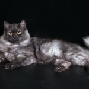 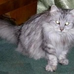 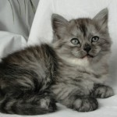 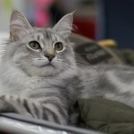Окрас колор-пойнт еще называют «гималайским», поскольку изначально его изучали на кроликах гималайской породы. Для нас же наиболее ярким и широко известным представителем этого окраса является кот сиамской породы. Узнаваемые черты этого окраса — светлый тон корпуса с темными выступающими частями (мордочка, уши, хвост и лапы). Сибирский кот колор-пойнт при рождении почти белый, и характерный окрас начинает проявляться лишь с течением времени.
Очень интересна популярная невская маскарадная. Влияние гена серии альбино создает различную интенсивность прокраса различных участков тела. При этом наибольшая интенсивность характерна для самых удаленных от центра частей тела — лапки, ушки и хвост, на мордочке — темная маска. Оттенок остального тела — слоновая кость, т.е. светло-бежевый. Полностью исключаются шоколадный и циннамоновый цвета вместе с их осветленными вариантами, а также любые другие рисунки (трехцветная, тэбби и т. д.). Любые другие окрасы и рисунки допустимы, как и любое количество белого. Поскольку таких кошек стали разводить в Санкт-Петербурге, они получили имя «Невская маскарадная».
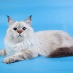 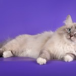 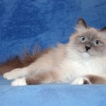 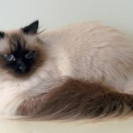Характерен сочетанием белого цвета с преобладающим главным. Возможна комбинация основного окраса (обычно черепаховый либо сплошной) с белым. Основной окрас должен иметь с белым четкую границу, составляя не менее трети, но и не более половины. Интересная особенность — сибирский кот данного вида должен иметь только одно окрашенное ухо. Основное требование к биколорным окрасам — равномерное распределение и правильное соотношение белых и окрашенных частей.
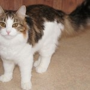 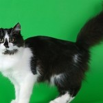 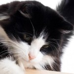
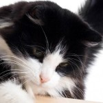
Эта группа объединяет кошек, имеющих рисунок в окрасе. В действительности любой кот (сибирский не исключение) генетически является носителями какого-то рисунка. Но видим мы его или нет – зависит от фактора «агути», находящегося в генетическом наборе и открывающего рисунок.
Кошка Tabbу имеет на мордочке тонкие линии, на лбу — узор в форме буквы «М», обводку на носу и глазах, высветленный подбородок, ожерелье на груди, темные кольца лапах и хвосте. При близком рассмотрении каждый волосок шерсти раскрашен в темные и светлые полоски.
Если сибирский кот не имеет рисунка, а его шерсть имеет ровный сплошной окрас без полос, пятен и разводов, это называется Solid, или сплошной окрас. Признанные цвета сибирских кошек – это черный (как осветленный вариант черного), красный (для дилетантов — рыжий), кремовый (осветленный красный) и особая голубая расцветка. В действительности голубая — это серая шерсть, но с очень интересным отливом. Есть два дополнительных «драгоценных» окраса — золотой и серебряный.
Золотой окрас отличается желтым или абрикосовым подшерстком и черными или темно-коричневыми подушечками лап, кисточками на ушах и кончиком хвоста. Золото проявляется только на кошках тэбби, поэтому золотого «дыма» не бывает. Серебристый окрас характерен бледным основным цветом и белыми корнями волос. На солидах он будет называться дымчатым.
Полосатые кошки табби очень близки своим диким предкам — и повадками, и расцветкой. И в каком-то смысле любую полосатую кошку — можно назвать тэбби, будь то манул, тигр или камышовый кот. Любая, даже не полосатая кошка, имеет ген табби, проявляющийся в самых неожиданных формах.
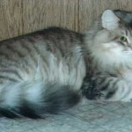 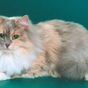 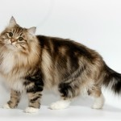 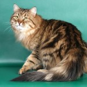В ее формировании не обошлось без участия представителей европейских короткошерстных пород. В процессе развития сибирская короткошерстная разделилась на две подгруппы: британскую и европейскую.
Данная порода отличается настолько спокойным безупречным характером, что вызвать у них приступ агрессии просто невозможно. Отличающиеся исключительной чистоплотностью и правильностью поведения, они могут иметь самый разнообразный окрас: однотонный, черепаховый, дымчатый и шиншилла, выделяющаяся своим мягким характером даже среди себе подобных.
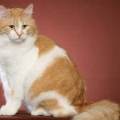 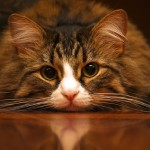 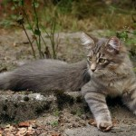 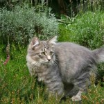